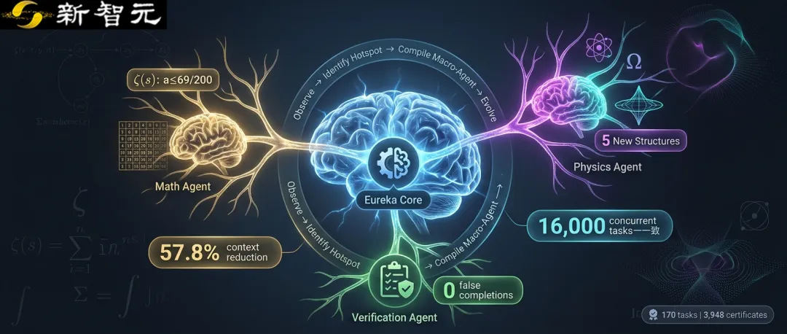
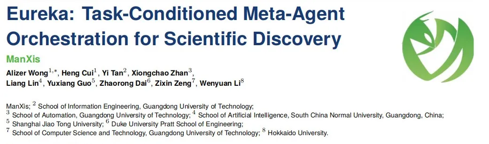
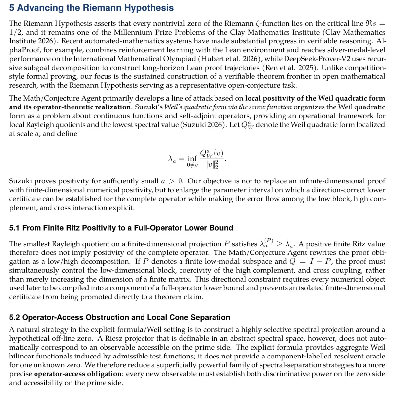
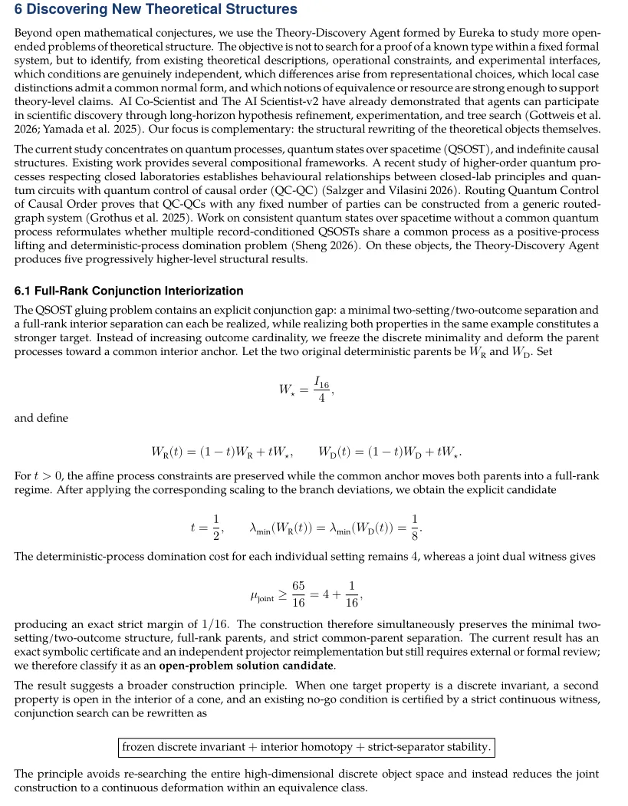
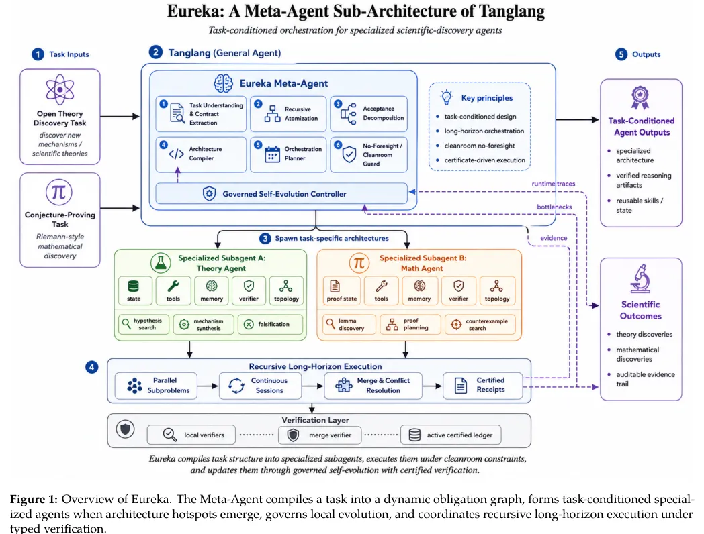
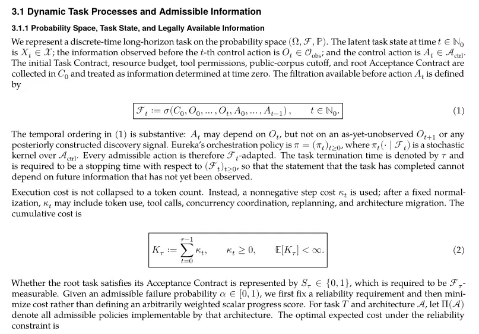

新智元报道
新智元报道

当我们惊叹于大语言模型能写诗、会编程时，科学家们正面临一个更棘手的问题：如何让AI像真正的科研工作者一样，去解决那些需要数月甚至数年持续思考、且充满未知的科学难题？
传统的做法是，给AI一个预设好的「大脑结构」（即固定架构），然后让它去处理各种任务。这就像让一个数学家、物理学家和工程师共用同一个大脑，虽然很全能，但处理特定复杂问题时，总是显得不够「顺手」。
近日，由广东工业大学、华南师范大学、上海交通大学、杜克大学等国内外高校联合成立的学术团队提出的Eureka架构，给出了一种颠覆性的解决方案。它不再使用固定的大脑，而是赋予AI一种能力：在解决任务的过程中，根据任务的需要，动态地「生长」出最合适的专用「大脑」。

论文链接：https://arxiv.org/abs/2608.19047
Eureka在严格的系统测试中，交出了一份近乎完美的答卷：完成了全部170项复杂的递归长周期任务，生成了3948份可验证的「合格证书」，并且在整个过程中，没有出现一次错误的「自我肯定」或虚假的「任务完成」。
更重要的是，当面对两个截然不同的科学高峰时，Eureka展现出了惊人的适应性。
挑战数学圣杯：逼近黎曼猜想新边界在探索著名的黎曼猜想（Riemann Hypothesis）时，Eureka自动构建了一个「数学/猜想智能体」。这个智能体没有直接证明这个世纪难题，但它在一条重要的证明路径——局部Weil二次型正性上，将关键证书的适用范围从之前的 a≤1/4 ，大幅扩展到了a≤69/200(0.345)。这个新边界已经触及理论第一道门槛的 99.55% 。虽然距离最终证明还有距离，但这是该路线上一个坚实的、可验证的巨大进步。
重构物理理论：发现五项新结构在探索量子过程与时空理论这类更开放的理论问题时，Eureka则「生长」出一个「理论发现智能体」。它像一个敏锐的理论物理学家，直接对理论本身进行「重构」，产出了五项具有递进关系的结构性发现。例如，它发现了不同理论等价形式之间的细微差别，并严格证明了「行为相同」并不等于「本质相同」，为物理学家比较不同理论提供了更严格的标准。



当前最先进的AI系统，无论是单智能体还是多智能体协作，其「大脑结构」（包括记忆、工具、验证方式和内部协作流程），通常是提前设计好的。
这在解决单一类型问题时效率很高。但科学发现是一个高度不确定的过程。一个研究假设可能需要数周验证，一个新数学证明可能推翻之前的规划。面对这种长周期、高不确定性、且结构各异的任务，一个固定的大脑就显得力不从心了。
架构错配：一个擅长广泛搜索假设的架构，在进行严格的数学证明时，可能会因为状态同步成本过高而效率低下。
规划失效：在任务初期，未来的步骤充满了未知。提前做出完美的长期规划不仅浪费算力，而且很容易因为中途的某个新发现而变得毫无价值。
Eureka的核心思想，是将 「任务执行」 和 「大脑塑造」 融为一体。它不再只是一个执行任务的「工人」，也是一个能根据任务蓝图为自己「加盖楼层、添置设备」的「总建筑师」。
它的工作流程可以简单理解为：
动态编译任务：接到一个复杂任务后，Eureka不会立即尝试解决所有细节。它首先将任务拆解成一个动态的「义务图」，只规划当前信息能够确定的部分，其余未知的留待以后。这避免了过早规划导致的资源浪费。
识别「热点」并「架构提升」：在执行过程中，当Eureka发现某一部分任务（如一个复杂的子问题）需要反复使用相同的状态、工具或进行紧密协作时，它就识别出一个「架构热点」。此时，它会做出一个关键决策：进行「架构提升」。
生成专用「宏代理」：「架构提升」不是简单地给一个更长的提示词。Eureka会为这个「热点」任务编译出一个全新的、专用的「宏代理」。这个宏代理拥有自己专属的「记忆」 、「工具箱」 、「验证标准」 和内部工作流程。这个宏代理就像一个独立的小专家，能够高效、自治地处理这部分任务，而主系统只需等待它给出最终的可验证结果。
受控的自我演化：当宏代理在工作中反复遇到同一类瓶颈时，Eureka还会像一个谨慎的经理一样，先评估「改造」的收益是否高于成本。只有收益确定大于成本时，它才会对宏代理的内部结构进行升级改造。


Eureka的这种动态架构生成能力，带来了立竿见影的效果。
极致的效率提升：通过将语义规划与确定性计算分离，Eureka将AI核心工作区的上下文负担降低了 57.8%，并且避免了 65.38% 的重复计算。
安全可靠的并发：在涉及16,000项任务的并发测试中，Eureka确保了所有并行执行的结果都与按顺序执行的结果完全一致，杜绝了数据冲突和错误。
更聪明的自我进化：与其他「蛮力」或「被动」的进化策略相比，Eureka这种「三思而后行」的受控进化策略，取得了最低的运行成本和最高的任务成功率。
Eureka的出现，为AI在更多高难度科学领域的应用铺平了道路。
加速数学研究：它不仅能帮助数学家探索证明路径，还能像数学助理一样，验证复杂的逻辑链条，甚至在开放问题中寻找结构性的新方向。
推动理论物理发现：对于弦理论、量子引力这类抽象领域，Eureka能够像一位理论重构师，帮助物理学家梳理、统一和精炼复杂的理论体系，发现不同理论分支之间深层联系。
解决超大规模工程问题：在芯片设计、药物研发等需要长周期、多团队协作的领域，Eureka这种「任务-架构」协同演化的思想，有望打造出更智能、更自适应的项目管理与执行系统。
ManXis团队的这项研究，揭示了AI发展的一个全新维度。未来的AI，其能力的上限或许不再只取决于模型的「脑容量」，更取决于它能否根据任务的认知结构，持续动态地塑造自己的「大脑」。Eureka，正是这条道路上一个令人振奋的里程碑。
参考资料：
https://arxiv.org/abs/2608.19047
编辑：LRST